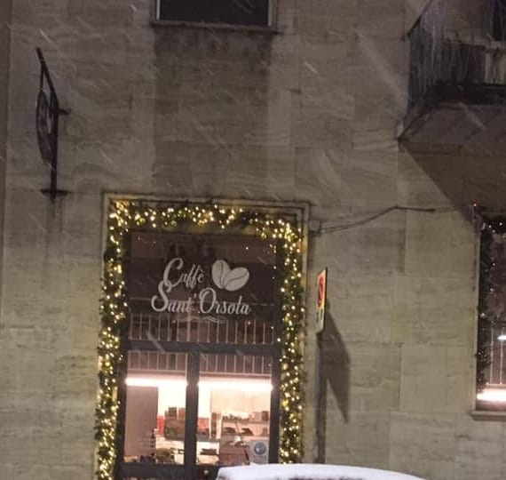

La colazione
Il cappuccino, anche di soia; i cornetti e le brioches: al pistacchio, alla crema, integrali col miele, vegane. La spremuta d'arance.
Bar tavola fredda · Via Sant'Orsola 5, a due passi da Palazzo Borromeo
Per rilassarvi e scambiare due chiacchiere in buona compagnia.
Dal lunedì al venerdì, dalle 7 alle 17: la colazione, il pranzo, la pausa del pomeriggio. Da Katia e Nicola.
4,7 su Google, 204 recensioni
«Finalmente una ventata di freschezza, simpatia e professionalità in via Sant'Orsola !»
Dal lunedì al venerdì, 7–17
Sul cappuccino, cannella o cacao: te lo chiediamo prima di farlo.
La giornata
Il cappuccino, anche di soia; i cornetti e le brioches: al pistacchio, alla crema, integrali col miele, vegane. La spremuta d'arance.
Il menù del giorno sulla lavagna: primi, secondi con contorno. E poi panini e focacce farcite, piadine, toast, insalatone.
Un caffè, le crostatine sotto la campana di vetro, due chiacchiere. Alle 17 si chiude.
Il locale
Il banco in legno chiaro, la saletta coi tavoli scuri; su per la scala, il soppalco col lampadario di ferro e, sul muro, l'orologio coi numeri sparsi. Fuori, qualche tavolino. Il Caffè Sant'Orsola è di Katia e Nicola, dal luglio del 2019.
Di sopra
Di sotto
Dicono
4,7 su Google, 204 recensioni
«Cortesia, gentilezza sono gli ingredienti principali che condiscono i piatti. Tutto buono. I croissant con la spremuta sono la mia colazione preferita. Una certezza anche a pranzo a due passi da lavoro. A Milano servono più gentilezza e prossimità come si trovano qui!»
Matteo Marucco Google, 2 anni fa
«We stumbled upon this lovely café tucked away from the busy main center, and it was exactly what we needed. […] The couple running the place (a very kind man and woman) provided excellent service. They were both so welcoming and attentive, making us feel right at home immediately. […]»
Zdeněk Konečný Google, 5 mesi fa, in inglese
«Colazioncina veramente soft!Locale piccino ma veramente ben curato, pulito […] Tutto buonissimo caffe ottimo e cappuccino perfetto, crema liscia e lucida, il signore prima di ordinarlo mi ha persino chiesto se preferivo cannella o cacao (ho preso cacao), servizio rapidissimo […]»
Vanessa Citterio Google, un anno fa
«We visited Caffè Sant’Orsola around 8 a.m. on Friday, and the place was buzzing with locals, empty espresso cups stacking up on the counter. Despite the rush, the staff were professional, warm, and friendly. The coffee was excellent, the croissants delicious […]»
Kd R Google, un anno fa, in inglese
«Personale dai modi squisiti. Puoi trovare tutto quello che cerchi in un ottimo bar di Milano. Piatti caldi, piadine, panpizza, croissant dolci e salati. Ottima scelta di birre e bibite. Ad un passo dal centro ma fuori dal caos. Consiglio vivamente.»
Simone Fari Google, 4 anni fa
«Excellent Doppio Macchiatos, delicious pastries, freshly pressed orange juice, and tasty paninis. Nice outdoor seating and friendly service. We will be back tomorrow for more!»
Par Akerblom Google, 2 anni fa, in inglese
Dalle recensioni su Google, come sono state scritte; la frase in alto da una raccomandazione sulla nostra Pagina Facebook. Tutte le recensioni su Google
Orari
Ad agosto chiudiamo per ferie, come ogni anno: le date le scriviamo sulla Pagina Facebook e su Instagram.
Orari dalla nostra scheda Google (settembre 2026).

Dove
La mappa è di Google: aprendola, Google riceve il tuo indirizzo IP e può usare i suoi cookie.